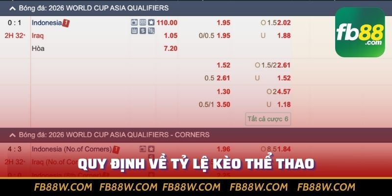
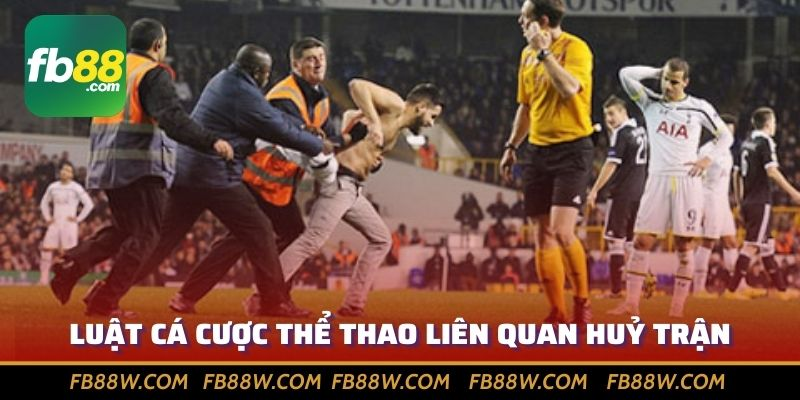

Nắm luật cá cược thể thao thông dụng nhất sẽ giúp bạn luôn tự tin khi chinh phục các khoản tiền thưởng tại nhà cái FB88, tân thủ cùng khám phá ngay trong bài!
Luật cá cược thể thao hiện nay đã được rút gọn và diễn giải rất đơn giản, dễ hiểu tại nhà cái FB88. Tuy nhiên nếu chủ quan bỏ qua, bạn dễ gặp phải những nhầm lẫn không đáng có. Cùng bài viết tìm hiểu nhanh những quy định, điều khoản bắt buộc mà người đặt cược cần nắm chắc nhé.
Luật cá cược thể thao là điều tiên quyết mà mọi dân chơi cần nắm bắt, bởi đây là tiền đề để các bạn thành công kiếm tiền. Điều đáng mừng quy luật kể trên ở mọi nhà cái đều tương đồng như nhau, FB88 - Thiên Đường Giải Trí Đẳng Cấp, Ưu Đãi Khủng cũng không ngoại lệ. Cùng tìm hiểu kỹ hơn về khái niệm này, cũng như lợi ích thiết thực khi thành thạo mọi điều khoản, luật lệ bạn nhé.
Bên cạnh luật thi đấu, nếu bạn tham gia dự đoán đặt tiền, chúng ta phải làm quen với luật cá cược thể thao. Hiểu đơn giản đây là hệ thống các điều khoản mà giới nhà cái đề ra, nhằm đảm bảo hài hoà lợi ích, gia tăng tính công bằng.
Bên cạnh luật thi đấu, nếu bạn tham gia dự đoán đặt tiền, chúng ta phải làm quen với luật cá cược thể thao. Hiểu đơn giản đây là hệ thống các điều khoản mà giới nhà cái đề ra, nhằm đảm bảo hài hoà lợi ích, gia tăng tính công bằng.
Ví dụ: Luật cá cược thể thao trong bóng đá, kèo Châu u để ký hiệu FT tức fulltime, hiệu lực cả trận. Tức điều bạn đoán chỉ nằm trong khuôn khổ 90 phút chính thức, gồm cả bù giờ, không tính kết quả trong 2 hiệp phụ hay đá luân lưu (Nếu có).
Những nhà cái lớn như FB88 đã hỗ trợ việc đặt cược tối đa, do đó người mới chưa rõ luật vẫn có thể tiếp cận. Tuy vậy về lâu dài, người chơi vẫn nên nắm chắc luật đặt cược thể thao vì các lợi ích như sau:
Luật đặt cược thể thao rất rộng lớn, mỗi môn thi đấu cụ thể lại phát sinh thêm hàng loạt quy định. Nhưng chỉ cần nắm những điều cơ bản dưới đây đã đủ để anh em tự tin kiếm tiền không giới hạn.
Kèo hay tỷ lệ kèo là giá trị mà nhà cái đề ra, qua đây bạn sẽ biết các lựa chọn, cơ hội kiếm tiền khi đưa ra dự đoán. Ví dụ tài xỉu 1.5 trái trong bóng đá, nếu có trên 2 bàn thắng cửa tài thắng, không bàn nào hoặc 1 pha lập công kèo xỉu ăn tiền.
Đi kèm với mỗi lựa chọn, tài hay xỉu đều mang mức odds, chính là tỷ lệ trả thưởng. Ví dụ khi đặt tài odds 1.97 (DEC), bạn bỏ ra 100k, thắng nhà cái sẽ trả lại 197k bao gồm 100k vốn và 97k tiền lãi.
Trang cược FB88 có quyền điều chỉnh odds liên tục theo thời gian, tăng hoặc giảm tuỳ tình hình thực tế. Giả sử đội kèo trên bỗng nhiên phong độ sụt giảm, mức ăn tiền vào cửa này có thể giảm mạnh và ngược lại.
Đừng nhầm lẫn giữa thời gian trả thưởng kèo và thời gian để hoàn tất lệnh rút tiền. Trả thưởng tức khi bạn đã thắng cược, thì mức bao lâu hệ thống nhà cái FB88 sẽ cộng tiền vào số dư ví.
Thông thường, các nhà cái quy định kết quả phải được ban tổ chức công nhận, và giữ ổn định tối thiểu 30 phút đến 1 giờ đồng hồ sau khi phát sinh sự kiện. Nhưng với FB88 chỉ cần 10 phút lúc điều bạn đoán thành hiện thực, hệ thống sẽ tiến hành thanh toán đầy đủ.
Các tín đồ thể thao hẳn không lạ việc sự kiện thi đấu bị tạm hoãn, thậm chí huỷ trận vì nhiều lý do khác nhau: Thời tiết, bạo động, một đội bất tuân thủ quy định ban tổ chức,...
Vậy nếu người chơi đặt tiền và bắt gặp trường hợp này, cần tham khảo các quy luật cá cược thể thao như sau:
Những luật cá cược thể thao kể trên sẽ là hành trang khởi động cho mọi dân chơi tại nhà cái FB88 danh tiếng. Khi cần tìm hiểu chi tiết hơn hay gặp thắc mắc bất kỳ, đừng ngần ngại nhắn cho bộ phận chăm sóc khách hàng của trang nhé.